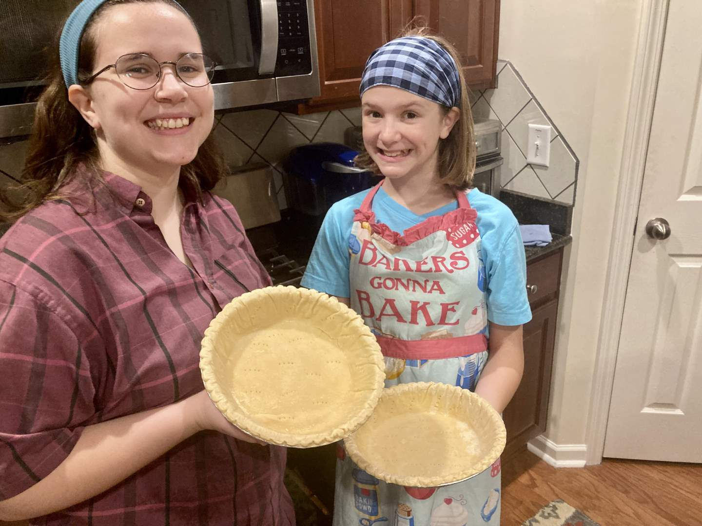

Pie 15: Strawberry Jello
2023-10-02Recipe from Katie Beth's maternal grandmother.
Taste:
Difficulty:
Vibes:
Suggested pairing: Cool Whip, deceit
On a visit to Katie Beth’s family in Tennessee, her mother suggested that we make a pie with KB’s sister Emma. Specifically, a strawberry jello pie that had become something of a tradition in her family or at least a dessert that carries a lot of nostalgia.
To start, Katie Beth blind-baked two store-bought pie crusts (the recipe was designed to make two pies) and Emma cut the tops off two tubs of strawberries. I made the strawberry jello mixture.
After the strawberries were placed into the two pie crusts and the gel was poured over them, we decided to make another batch of jello to thoroughly cover everything. Emma wanted to add a lot of blue food coloring to the second batch so there would be red and purple layers in the pie. That suggestion was vetoed by the top brass.
With the pies completed, we had to let them set and cool in the fridge for about 4 hours minimum. The cooking took place around 6 PM, and the official word was that the pies would not be eaten until the morning. However, by 9:30 Katie Beth and I just couldn’t handle the suspense anymore and we, along with Katie Beth’s mom, took some slices to assess the quality of the pie.
In the morning Emma defended herself against what she saw as a tacit accusation by protesting that she could not possibly have eaten the pie slices since she slept in. Her protestations were truly in vain as we were well aware who had truly committed the crime. (Emma, if you are reading this: No one was blaming you for the missing slices and I only ever ate one slice anyway).